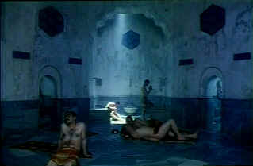

| Steam/ A-, D |
| Strand/1997/96/ |
The film is beautifully made by writer/director
Ferzan Ozpetek. Even the very opening passages elegantly foreshadow the
events that will unfold. Ferzan paints his picture with easy sensuous
strokes making Istanbul a seductress by the sea. She weaves a spell with a
scent of the Orient accented by Europe over supplicants arriving in
the city searching for a sense of themselves.
 |
|
Francesco is drawn into the
world of the Hamam. ©Strand
|
Like the mist of a Turkish bath, there's a
sense of fate and destiny floating in the air as Francesco arrives in
Istanbul. The Italian architect has interrupted his busy design schedule
to complete the sale of the building left to him by his expatriate
Aunt.
Wandering through the city, chance takes Francesco into
another world where he experiences a touch of traditional Istanbul. Later,
when the real estate agent takes him to the property, he meets the Osmans
who worked for his Aunt. There he learns that the building he is selling
is a hamam, which means bath house in Turkish. Nothing quite happens the
way he has envisioned it. From the moment he is induced to dine with the
Osman family, the process of seduction begins.
It's a remarkable film, a unique journey that takes
Francesco from his sophisticated Italian life to a timeless place in Istanbul.
The hamam restoration that he undertakes is fascinating, and the
relationships that develop build with a natural flow. Steam is a layered
film, gracefully moving from section to section. From the moment
Francesco's wife Marta arrives in Istanbul you
know that something will happen. When she examines the Aunt's belongings,
there's a mysterious sense of union.
The acting is as natural as the setting right
across the board. Alessandro Gassman (The son of Italian matinee idol Vittorio
Gassman.) is a perfect Francesco. He captures the gradual change of his
character subtly. Halil Ergün is a strong presence as Osman and Francesca
d'Aloja crafts a believable character from Marta.
The haunting Turkish score by Aldo de Scalzi and Pivio
adds to the exotic ambiance. Pasquale Mari's cinematography is seductive.
The location setting of Istanbul itself becomes a character. Nicely paced
by Ozpetek with a gradual increase of the beat.
The original Turkish title is Hamam
which means Turkish bath. The source material is not very good for this
DVD transfer. Black levels are rather washed out. Shadow detail is
compressed and not reveling. There's a good amount of dirt on the original
elements. It looks as if 3-2 pulldown has not been flagged on the DVD
resulting in lots of jitter. Perhaps it was even made from a composite
master. Color is adequate at best. There are a lot of soft scenes. It's
not a pretty looking DVD. Too Bad. There's an elegance about the way its
shot and the setting is very exotic. This should been a good-looking DVD
and it's not, but this is a film well worth seeing even in this diminished
visual state. White English subtitles are burned on the image.
Reviewed on a Sharp 9000VX DLP Projector |
|
|
|
Looking for a good Foreign Film Fix?
Here's a list of reviews that can get you started on an overdose.
Click here to satisfy the urge.
Hitchcock on DVD

Information and review links to Alfred Hitchcock on DVD

 Have you visited
Home Theater
Talk lately? One of the friendliest places on the Net for Home
Theater and DVD discussion, you can get help for installation problems or
simply share your opinions with other Vidiots. Have you visited
Home Theater
Talk lately? One of the friendliest places on the Net for Home
Theater and DVD discussion, you can get help for installation problems or
simply share your opinions with other Vidiots.
Kinoeye Archive
This is a resource of all content-rich materials on the web
relating to Central and East European cinema. The ultimate aim of the
Kinoeye Archive is to provide a near-as-damn-it definitive index of
intelligent and thoughtful English-language analysis of Central and
Eastern European cinema on the web.

Images is a non-commercial Web
site created for everyone who enjoys movies and popular culture. Images is
published quarterly; however, new reviews will appear each week, so check
back often.
Werner Herzog Film
![[ Werner Herzog ]](../images/werner-herzog.jpg)
The Web site of director Werner Herzog includes lots of great material. A
perfect stop for anyone who admires his films. |